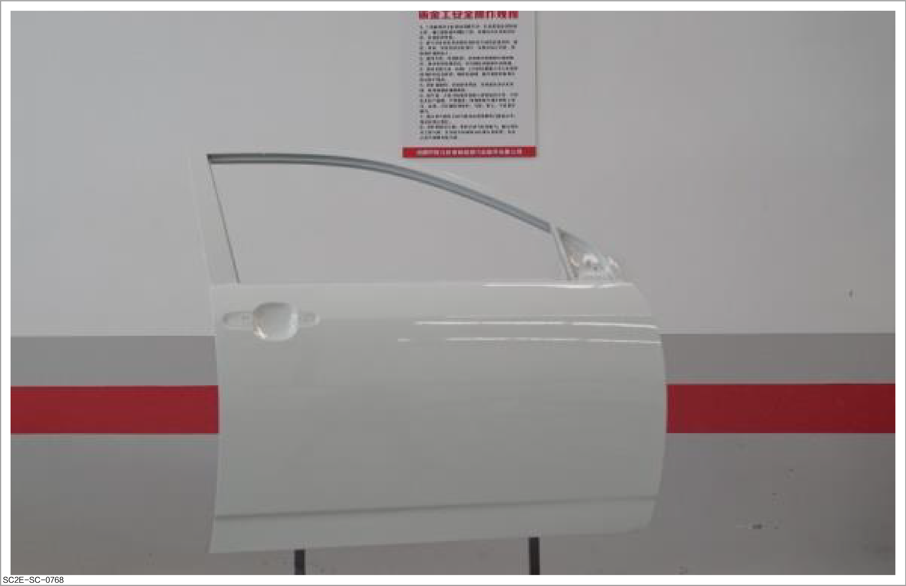
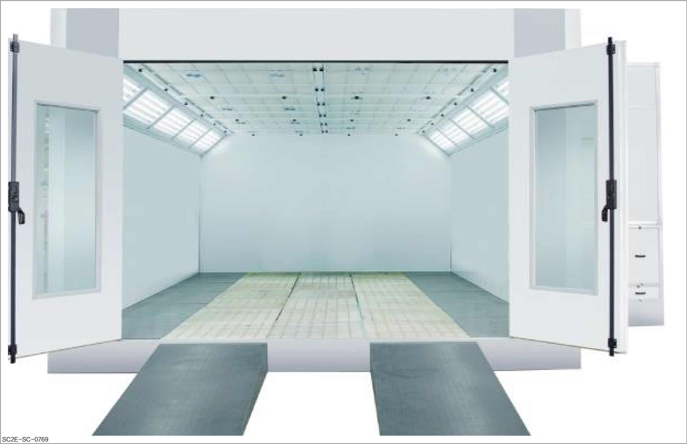
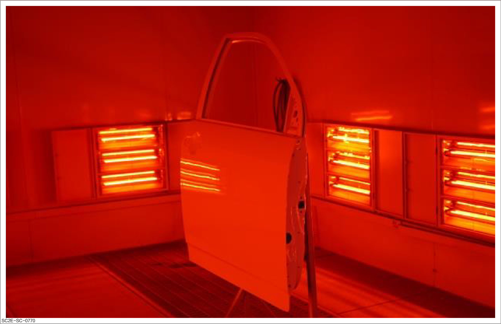

How to dry

-
During operation, please take safety protection measures as required. For details of safety protection, please refer to Spraying protection
-
Before operation, please carefully read and observe site safety and vehicle protection. For details, please refer to Site safety and vehicle protection
Purpose of drying during repair of vehicle paint:
-
Formation of hard protective layer: Through the drying and curing process, the solvent in the vehicle paint volatilizes, and the resin components in the paint are cross-linked or polymerized to form a hard and continuous protective layer. This protective film can effectively prevent corrosion, ultraviolet damage, physical wear and chemical erosion, and protect the vehicle body metal from environmental damage.
-
Improvement of aesthetics: During drying, the paint surface will become smoother and flatter, and its glossiness and color saturation will be improved, making the vehicle appearance more bright and improving the overall aesthetics.
-
Enhanced adhesion: A proper drying process can ensure good adhesion between paint layers and substrates and among paint layers, so as to prevent peeling or blistering of the paint surface.
-
Shortening of construction period: Accelerating the drying process can shorten the whole painting operation time and improve the work efficiency.
-
Defect reduction: Correct drying and curing can avoid paint surface defects (such as sagging, orange peel, pinholes, and cracks) caused by improper drying and ensure the quality of paint surface.
-
Stability and durability: Completely dried paint film has better physical properties and chemical stability, which can maintain its appearance and protective performance for a long time and prolong the service life of vehicle paint.
Natural drying
Make sure that the drying environment is clean and dust-free.
-
It refers to the process of placing the sprayed panels in a workshop for natural drying. The drying duration varies with the surrounding environment and temperature.

Forced drying
It refers to the process in which auxiliary drying equipment is used to speed up the drying. To avoid pinholes, sufficient curing time should be reserved before drying.
Common methods:
-
Drying the paint surface using an air heat exchanger:
-
Dry the paint surface with hot air circulated by this equipment.
-
It is safe for use since the air containing volatile solvent is not in direct contact with the heat source, but the heating efficiency is low and the equipment is large.

-
-
Drying in spray booth:
CautionBefore using the spray booth, please understand its requirements. Refer to Drying equipment and tools
-
Drying the paint surface with heating light tube:
-
The short-wave infrared heating lamp is fast in heating and convenient for use. However, the heating range is affected by the radiation range of the lamp.
-
After spraying, ventilate the paint surface and let it stand in the spray booth for 10 - 20 minutes, and then dry it at 60°C for about 30 minutes to forcibly dry it.
-
When spraying or repairing the small-area paint surface, wait until the paint film surface is dry and free of dust, and then use the heating light tube for forced drying.

-
-